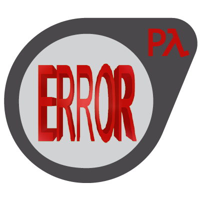
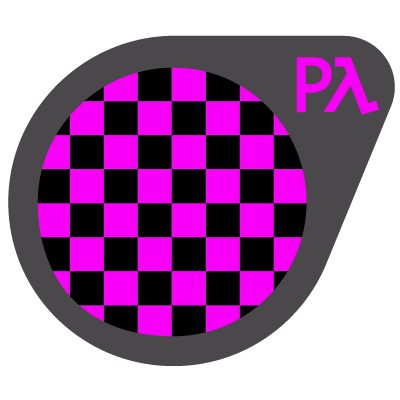

Welcome to pySourceSDK!¶
pySourceSDK is an organisation that aims to provide utility libraries to read and write various Source Engine file formats.
Finished Projects¶

- ValveBSP
A tool to read and edit .bsp files for the Source engine. https://pysourcesdk.github.io/ValveBSP
- ValveFGD
A tool to read and write .fgd files for the hammer editor. https://pysourcesdk.github.io/ValveFGD
Upcoming Projects¶
- ValveVMF
A tool to read and write .vmf files for the Source engine.
- ValvePCF
A tool to read and write .pcf files for the Source engine.

- ValveMDL
A tool to read and write .mdl files for the Source engine.

- ValveVTF
A tool to read and write .vtf files for the Source engine.